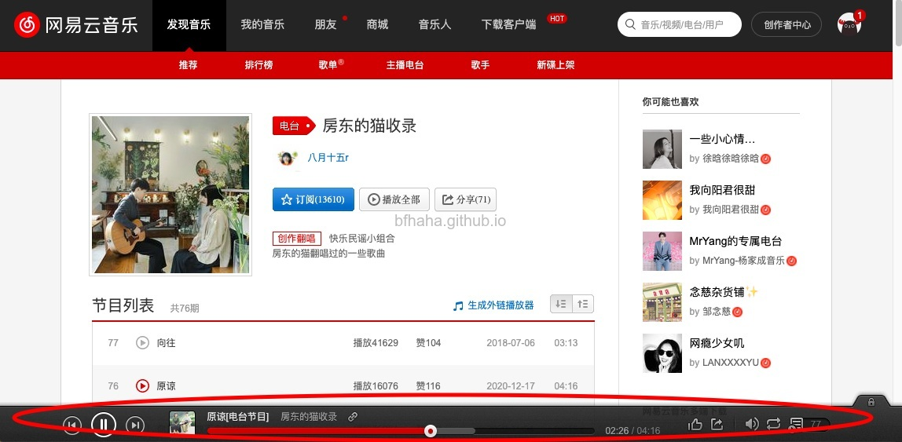
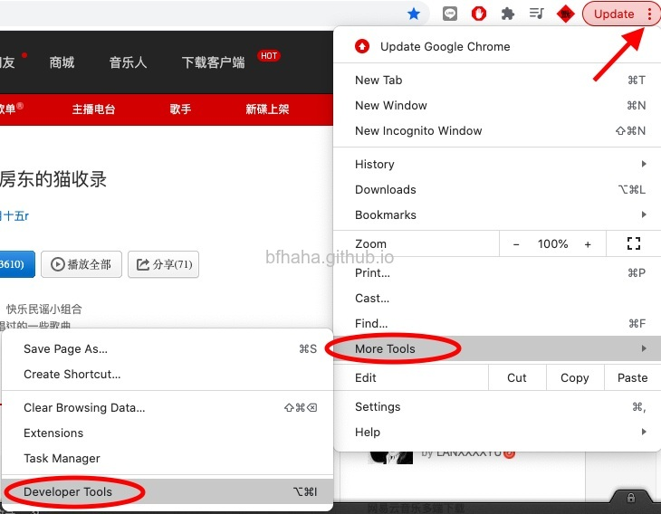
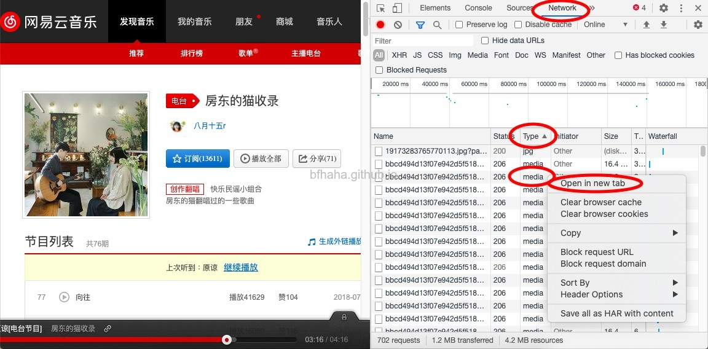
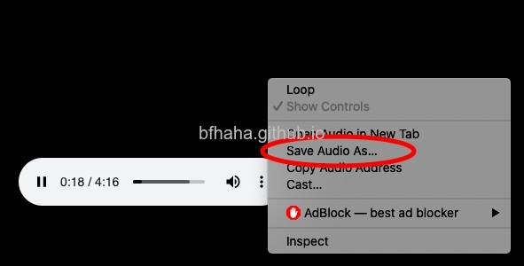

免安裝軟體下載網易雲音樂
- 用Chrome連結到欲下載歌曲的頁面，播放歌曲，以筆者最愛的房東的貓電台為例。

-
在Chrome中打開[開發者工具]

-
選擇[網路]標籤，Chrome會開始解析網頁上讀取的東西，按[類別]排序，通常想要下載的音樂就會是audio或是media類型（也可能會是Type: fetch, Status: failed），如果有好幾個不知道怎麼選擇，通常是容量或是流量最大的那個，找到後在上面按右鍵，選擇[在新分頁開啟]。

-
在新分頁中會載入要下載的歌曲，在上面按右鍵，選擇[另存音樂]。
